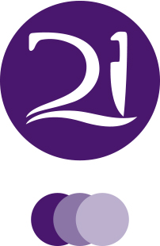

J
Josh Eaton - Aspiring Web Developer

District21
Description: I built a restauraunt website in order to acrue more customers and give customers a overlook of the restauraunt, as well as directions, contact info, and a menu
Skills: FTP, HTML, Css.
Lettering.js
Description: I built this site for learning about lettering.js a jQuery plugin
Skills: FTP, HTML, Css.

Primus Discography
Description: I built this site to show of my knowledge of bootstrap and github. I chose my favorite band Primus to be the subject of the site.
Skills: FTP, HTML, Css.
Woodsman log
Description: Me and my team of 3 other people build this site for the bpa compitition.
Skills: FTP, HTML, Css.

Wonder Years Redesign
Description: Discography Redesign
Skills: FTP, HTML, Css.